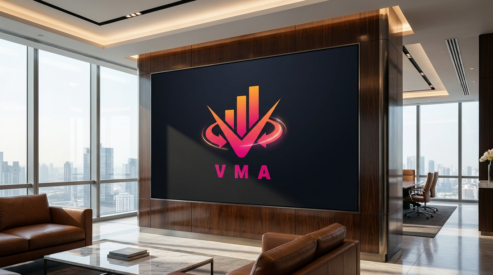

How VMA Community Builds a Stronger Foundation for Investment Learning
Why structure, context, practical application and reflective review create a more durable path to investor capability.
Read the full articleOur editorial library explores how education, technology, risk awareness and disciplined practice can help investors build more durable capability.
Each VMA Community article is designed to stand on its own while contributing to a connected view of investor development.
These are not fast predictions or isolated market calls. They examine the thinking behind a process: how people learn, how technology can assist research, why risk deserves constant attention and how consistent habits matter over time.
Why structure, context, practical application and reflective review create a more durable path to investor capability.
Read the full articleA practical view of AI-assisted research, model limits and the enduring role of human judgment.
Read the full articleHabits that help investors verify claims, understand incentives and resist unrealistic promises.
Read the full article
How flexibility, human exchange and practical reinforcement can work as one coherent model.
Read the full articleA framework for turning goals, research, risk controls, documentation and review into a repeatable investment process.
Read the full article